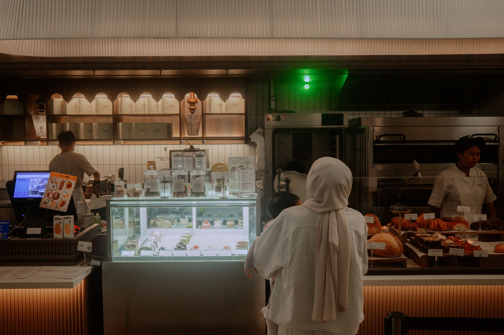

inventory too.
Raleigh coffee shops and bakeries: weekday creator visits that fill quiet hours
Every Raleigh coffee shop and bakery has the same shape to its day: a morning rush it can barely keep up with, then long quiet stretches where the case is full, the staff are ready, and the room is half empty. Those quiet hours are inventory. A weekday creator visit, timed to land in them and posted by someone whose audience actually lives in the Triangle, is how you sell them.
By Jeff, Founder, Magpie · November 22, 2026 · Magpie Learn hub
Do not buy a post for your busiest hour. Book local creators into the hours you cannot fill: mid morning and early afternoon on weekdays. Pick them on local reach, the share of their audience that lives in Raleigh and the Triangle, give each one the signature item at its best, and read the till in that quiet window over the following week. The rush takes care of itself. The quiet hours are where a creator earns their keep.
- Quiet weekday hours are unsold inventory. Creator visits should be timed to them, not to the rush.
- Local reach beats follower count. Triangle audiences can act on a post the same day.
- The signature item, served at its best moment, is the offer. The rest is logistics.
- Measure the quiet window, not the whole week, or you will never see the effect.
Raleigh runs on routines, and routines have gaps
Raleigh mornings stack up fast: state government and office crowds downtown, NC State students moving through the Village District and Hillsborough Street, school runs in Five Points and North Hills, and commuters crossing the Triangle from Cary, Apex, and Durham. Then the rush breaks, and from mid morning to mid afternoon many shops sit in the gap between routines, fully staffed and half full.
That gap is exactly where a creator post does its best work. A post that lands at 10 in the morning reaches people planning lunch, a study session, or an afternoon break, and they can act on it the same day because they already live here. That is the whole logic of local reach: the audience that matters for a coffee shop is the one within a short drive, not the biggest one on the internet.
Book the visit for the hour you need filled
Coffee shops: mid morning and early afternoon
Invite the creator in after the rush, when the counter can breathe and the staff can actually talk about the drink. A mid morning visit posts to people choosing where to spend the next break. An early afternoon visit catches the laptop and study crowd deciding where to land. Both are hours your regulars already proved exist. They are just not full yet.
Bakeries: early, while the case is full
A bakery photographs best in its first hours, when the case is full and the signature bake is still warm. A creator who visits then posts the version of your shop a weekend customer already loves, aimed at the weekday crowd that has never seen it. Weekend sellouts are proof of demand. The weekday visit is how you move some of that demand to Tuesday.
One clear deliverable, written down
Keep the terms simple and written before the visit. A comped visit is 1 post or reel plus 1 story that shares the post, posted within 48 hours, honest and disclosed. A paid booking runs at the creator's own listed rate, $50 floor, creator keeps 97 percent, with deliverables set in the booking's terms. Direction, not a script: use the approach in how to brief a creator and let the creator sound like themselves.
Triangle creators, picked by local reach
Raleigh is a routines city, so pick creators who are visibly part of one: the student who posts study spots near campus, the Five Points regular who covers neighborhood breakfasts, the downtown worker whose lunch posts her coworkers actually follow. Our Raleigh creator guide maps where the city's creators actually are, and the Raleigh market page shows the founding roster forming now.
- ✓Local reach first: the share of the audience living in Raleigh and the Triangle is the number that fills a weekday. Follower count is a tiebreaker at best.
- ✓Spread across routines: one campus creator, one neighborhood regular, one downtown lunch voice reaches three different quiet hour crowds. Five creators who reach the same few blocks is one test run five times.
- ✓Reliability counts: a creator who posts on time and as agreed is worth more than a bigger account you have to chase. On Magpie, on time posting earns Momentum points, and Momentum raises visibility.
- ✓Repeat the winners: a quiet hour habit is built by the same trusted voice coming back. The playbook in turning one creator visit into a regulars habit covers the second invite and the rhythm after it.
If you are planning around the calendar rather than the clock, the seasonal campaign calendar shows how to stack visits around the moments Raleigh already gathers, from the start of the NC State term to the holiday market weeks downtown.
Judge the quiet hours, not the whole week
The most common way to misread a weekday creator visit is to look at total weekly sales, where a strong Saturday buries a quiet Tuesday that quietly doubled. Read the window you booked instead: covers and average ticket in the quiet hours across the following week, saves and shares from local accounts, and the oldest signal in retail, someone at the counter saying they saw the post.
One visit is a sample, not a verdict. Three or four visits, spread across creators and quiet windows, show you the pattern: which voice, which hour, and which item actually moves. Rebook what the pattern proves, adjust the timing for the rest, and your quiet hours stop being the cost of the rush and start being a second shift your best customers did not know you had.
What else do Raleigh coffee shops and bakeries ask?
When are the quiet hours a Raleigh coffee shop should fill with creator visits?
For most Raleigh coffee shops, the gaps are mid morning, after the commuter and school run rush fades around 9:30, and early afternoon, roughly 1:30 to 4, before the after school and laptop crowd turns over. Those are the hours a creator visit is worth the most: the counter has capacity, the staff have time to talk, and a post that lands that morning can still move people the same day. Bakeries run a little earlier, with the bake case fullest and most photogenic in the first hours after opening.
What should a Raleigh bakery or coffee shop offer on a weekday creator visit?
Offer the thing you want to be known for, at the moment it is at its best: the signature drink, the seasonal pastry, the bake that sells out on weekends. A comped visit is 1 post or reel plus 1 story that shares the post, posted within 48 hours, honest and disclosed. Keep the offer simple and written down before the visit, so the creator knows exactly what is included and what the post needs to cover.
Should a Raleigh coffee shop use comped visits or paid bookings?
Both work, and many shops run both. A comped visit costs the drinks and food itself, and suits trying a creator for the first time. A paid booking runs at the creator's own listed rate, with a $50 floor, the creator keeps 97 percent, and the deliverables are set in the booking's terms, which suits a creator you already trust or a specific launch you need covered. Be clear about which lane each visit is in before anyone arrives.
How do I pick creators whose audience actually lives in Raleigh?
Pick on local reach: the share of a creator's audience that lives in the Raleigh area. A creator with 4,000 followers, most of them in Raleigh, Cary, and Durham, will fill more weekday seats than a creator with 60,000 followers spread across the country. On Magpie, creators are ranked by local reach, not follower count, and the local share is visible before you book, so you are choosing on the number that can actually walk in.
What should I measure after a weekday creator visit?
Measure the hours you were trying to fill. Count covers and ticket size in the quiet window across the following week, watch for saves and shares from local accounts, and note anyone who mentions the post at the counter. One visit is a sample. Three or four visits, read together, tell you which creator, which hour, and which item actually moves your quiet hours, and that is who you rebook.
Your quiet hours are already staffed. Fill them.
See Raleigh creators ranked by local reach, with their categories, rates, and delivery record visible before you book.
Sign-ups live in the Magpie app
Join as a business and book local creators whose audience actually lives in the Triangle.
See the full picture first on the businesses page